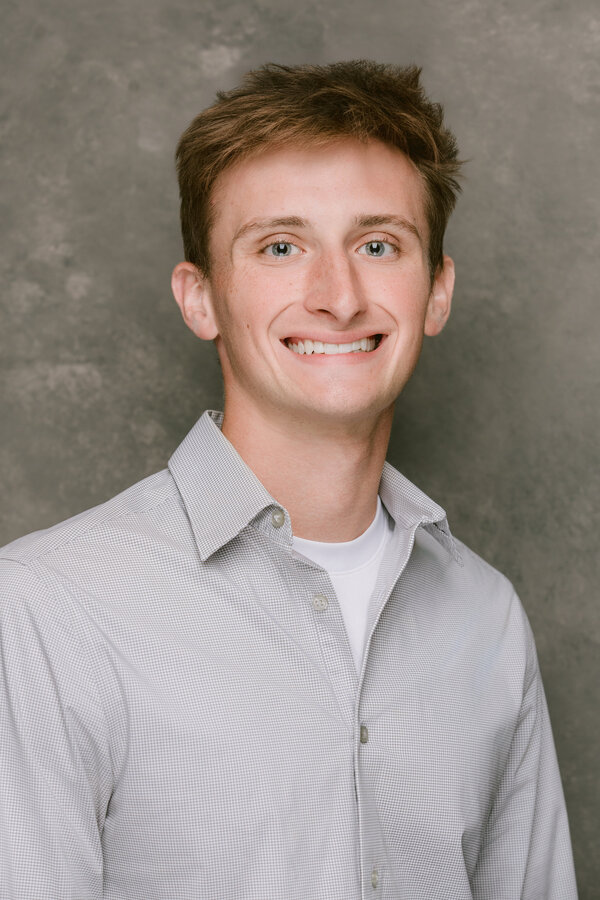
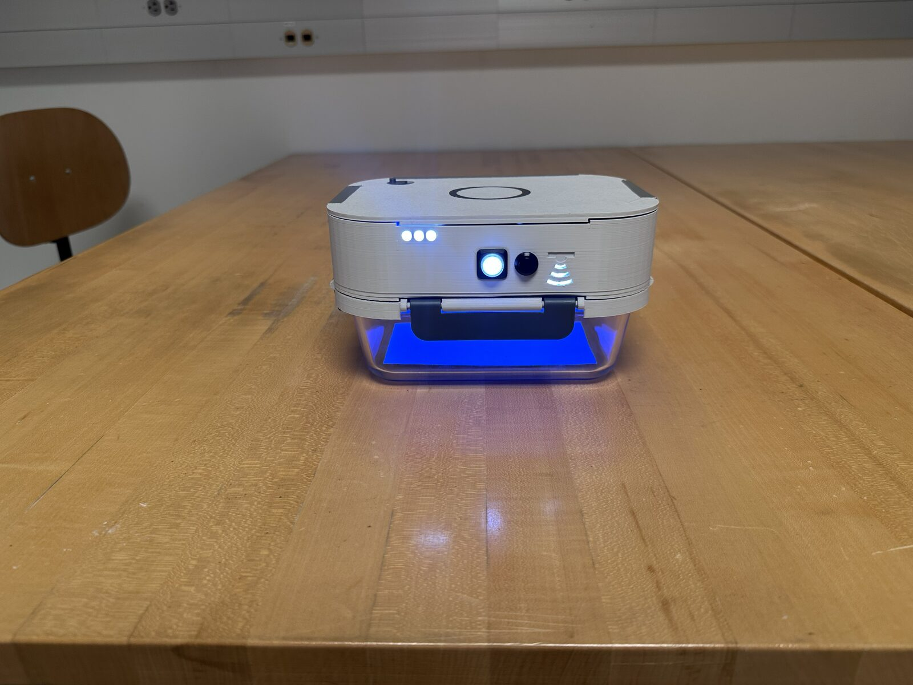

I'm a mechanical engineer in automotive exterior design. I take a styling concept and make it a production part, holding the fit and finish most people only notice when it's wrong.
This site documents my projects and the thinking behind them. It's a working file, added to as I ship. Start with the UV food storage case study.

Two internships, a degree, and now full time. The short version is here; the full history and résumé have the detail.
One live case study for now. Each project grows into a full write-up as it ships.

UV-C LID · MID-CYCLEA UV-C sanitizing lid that slows produce spoilage inside an ordinary glass container. Two-button interface, sealed dishwasher-safe body, weeks per charge. I owned the battery and inductive charging system.
The day job, in method not parts.
Rebuild a studio surface as clean, manufacturable geometry in CATIA V5 and V6.
Own the gaps, flush transitions, and seams where two parts meet the eye.
Mirrors, wipers, and mechanisms that move cleanly across their full range.
Tolerance stacks, DFM, and the trade studies that get a concept to a moldable part.
"Once you imitate, you imitate forever."
Soichiro Honda · Founder, Honda
Open to conversations about consumer hardware, mechanisms, and exterior systems.